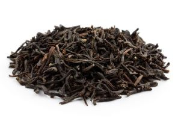
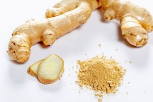
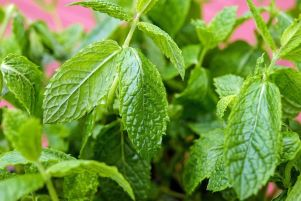
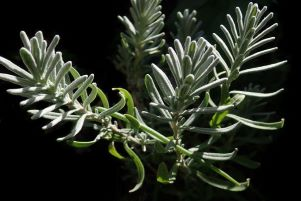

| Herb Name |
Picture |
Origin |
Description |
Taste |
Effects |
| Green Tea |
|
China |
shiny yellow-green leaves, ends at a point |
green, grassy taste |
rich in antioxidants, reduces bad cholesterol, promotes cell growth |
| Black Tea |
 |
China |
leaves are small and green, black and shriveled when dried |
depends on specific herb, bitter |
lowers risk of heart disease, anti-inflammatory |
| Oolong Tea |
 |
China |
shiny yellow-green leaves, ends at a point |
light, grasssy taste |
helps manage weight, prevents skin ailments |
| Ginger Root Tea |
 |
Asia |
white/tan thick root |
spiced, heavy taste |
anti-inflammatory, alleviates motion sickness, calms the stomach |
| Chamomile Tea |
|
Egypt |
light green and feathery leaves |
light, floral taste |
antibacterial, aids in sleeps and stomach problems |
| Peppermint Tea |
 |
Egypt |
round leaves with serrated edges |
spiced, minty taste |
decongestant, anti-inflammatory, supports healthy appetite |
| Elderflower Tea |
|
Germany |
serrated edges, leaves end at a point |
light, crisp, clean taste |
used in medical practices, cure for the common cold |
| Lavender Tea |
 |
Mediterranean |
long, small leaves with round ends |
fresh, floral taste |
relaxes, aids in sleep and digestion, relieves pain |